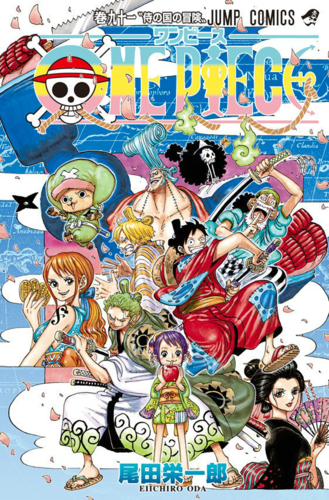

The Born and Growth of 'One Piece'

↓↓↓↓↓↓↓↓↓
The history of 'One Piece' is really long and this year is its 21st year. One Piece was firstly published on 1997 in Shueisha's Weekly Shonen Jump magazine and untill now, it already had 91 independent books which includes more than 900 episodes in total. When people talking about 'One Piece' things that comes in there mind are pirate, straw hat and the final treasure -- one piece. Pirate is definitely the theme of this manga and is also Oda's dream. Straw hat can be looked as one of the main symbol of One Piece. It is like Pikachu to Pokemon, and the "s" symbol to DC. However, seldom people know about the story of the name "one piece". Some people wonder why a kind of woman clothes can be the name of a adventure manga? There are many rumors and one of the most famous one is that the name is come from a very simple reason. When Oda is still a small artist, he liked one piece a lot and he said to his friends that if one day he can be success, his manga must be called one piece. It is interesting that if this is true, it is also like a prediction from him or he can also say that he kept his promise. With the famous of manga, it was firstly adapted into an OVA in 1998 and in the following 1999, it becomes our familiar one piece anime.